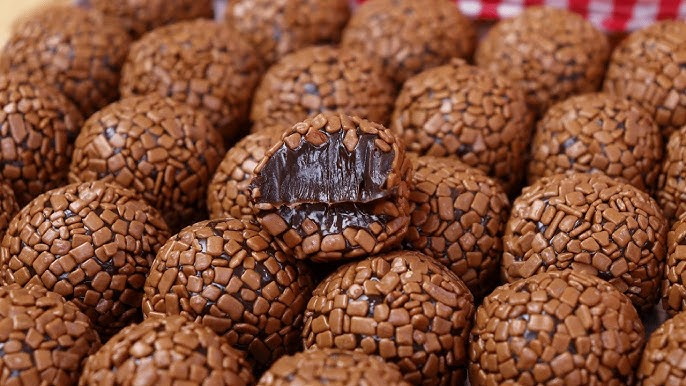

Back to Home
Brigadeiro Recipe

Brigadeiro is one of Brazil's most beloved desserts. These rich,
chocolate truffles are made with sweetened condensed milk, cocoa
powder, and butter, then coated in chocolate sprinkles. They are
simple to make and perfect for birthdays, parties, or any special
occasion.
Ingredients
- 1 can (14 oz / 395 g) sweetened condensed milk
- 2 tablespoons unsweetened cocoa powder
- 1 tablespoon butter
- 1 cup chocolate sprinkles
Instructions
Follow these steps to make delicious homemade brigadeiros:
Step 1: Combine the ingredients
- Add the sweetened condensed milk, cocoa powder, and butter to a medium saucepan.
- Mix the ingredients until the cocoa powder is fully incorporated.
Step 2: Cook the mixture
- Cook over low to medium heat.
- Stir continuously with a wooden spoon or silicone spatula to prevent burning.
- Continue cooking for about 10–15 minutes, until the mixture thickens and starts pulling away from the bottom of the pan.
Step 3: Cool the mixture
- Transfer the mixture to a lightly buttered plate or bowl.
- Allow it to cool completely before handling.
Helpful tip
For the best texture, avoid cooking the mixture over high heat. Stir continuously to prevent it from sticking or burning.
Congrats!
Enjoy your brigadeiro!